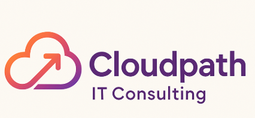

We empower enterprises with cutting-edge IT consulting services, DevOps, cloud transformation, and robust software testing solutions tailored for today’s digital landscape.
Accelerate your release cycles with scalable and maintainable automated testing frameworks.
Ensure your applications can handle real-world load and stress with expert performance assessments.
Streamline your development pipeline through CI/CD, infrastructure automation, and cloud-native practices.
Leverage cloud technologies for scalability, agility, and cost-effectiveness across your enterprise.
Embed quality at every stage of development with a comprehensive QA strategy and governance model.
Validate machine learning models and ensure data integrity across your analytics stack.
At Cloudpath, we believe in simplifying IT complexities and enabling organizations to scale with confidence. Our expert consultants bring deep domain knowledge and technical excellence to every engagement, helping you stay ahead of your competition.
Founder & Principal Consultant - 15+ years of experience in QA and cloud consulting.
DevOps Architect - Specialist in CI/CD automation and performance optimization.
Test Automation Lead - Expert in Selenium, Cypress, and test strategy development.
Enabled a global retail chain to migrate testing infrastructure to the cloud, reducing testing time by 40%.
Implemented a CI/CD pipeline for a healthcare startup, improving deployment frequency by 3x.
"Cloudpath helped us scale our QA efforts and improve quality metrics across the board."
"Their automation and performance testing expertise made a huge impact on our release cycle."
Let’s start your digital transformation journey together. Reach out to our team today.
Email: info@cloudpathconsulting.com